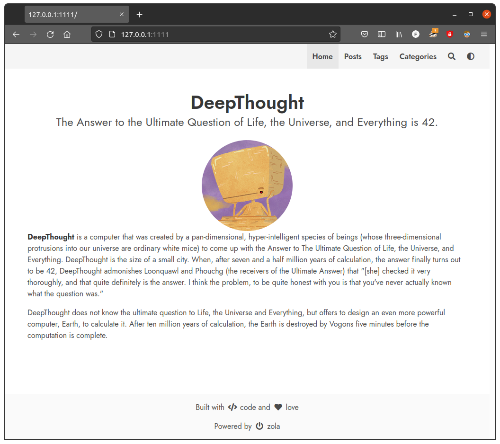

Starting a blog with Zola
A blog is a great way to reflect on thoughts and to get in touch with like-minded people. Maybe you think about starting a blog or want to change your writing workflow. Choosing a framework for blogging can be a hard task. There are plenty of options and each has it's strengths and flaws. This is a short excerpt of my story using a framework called Zola.
Static site generation
It has been a while that I want to start a blog about all kinds of things and now finally you can read my first published post. The probably most used platform for small websites is WordPress. After having gained some experience with it I am tempted to try a different approach: static site generation. The main difference here is, that you basically write your content on a local machine, then you run a program which generates the website from that content. When the content lives in a repo on GitHub, continuous integration and GitHub Pages simplify the publishing workflow of your website.
| WordPress | Static site generator | |
|---|---|---|
| Setup | Very easy on WordPress.com | More work necessary |
| Editing | Through web interface | Markdown files |
| Server-Capabilities | Database and PHP necessary | Only static files |
The free hosting on GitHub Pages without advertisement and writing content in Markdown is a big plus for me. The most established framework is Jekyll. Since I am curious on what existed in the Rust world and found two projects: Coblat and Zola. To have a good-looking website right from the beginning it is nice to have some predefined theming options available. I couldn't find a way to easily theme Cobalt, so I choose Zola. There are plenty of options in their showcase.
Zola with DeepThought
After having Zola
installed
it is used through its CLI. Start a new Zola project in a directory called
myblog by running:
zola init myblog
Zola will ask you some questions and depending on the answers it will populate
the configuration file conifg.toml. If you don't know what to choose, you can
go with the defaults by just pressing enter. I recommend using git for version
control, so we have to initialize a repository:
cd myblog
git init
To use a theme we have to clone it inside the themes directory. I will use
the DeepThought theme. (note that git submodule requires the parent to be
a git directory.)
cd themes
git submodule add https://github.com/RatanShreshtha/DeepThought
cd .. # Back in myblog directory
To get started we have to adjust our config.toml, which is located in
myblog. In the Zola docs you will find general
information
about the configuration. Our theme requires some extra configuration which is
documented here.
We need to make the following changes:
-
Add theme:
theme = "DeepThought" -
Add taxonomies (more info)
taxonomies = [ { name = "categories", feed = true, paginate_by = 10 }, { name = "tags", fees = true, paginate_by = 10 }, ] -
Add a minimal amount of configuration to the extras section to make the website work with our theme. Put this code block after
[extras]:navbar_items = [ { code = "en", nav_items = [ { url = "$BASE_URL/", name = "Home" }, { url = "$BASE_URL/posts", name = "Posts" }, { url = "$BASE_URL/tags", name = "Tags" }, { url = "$BASE_URL/categories", name = "Categories" }, ] }, ] [extra.author] name = "DeepThought" avatar = "/images/avatar.png" [extra.social]
The final config.toml should look similar to this (ordering
can matter).
Now we need to add some content:
# in myblog directory
mkdir content/posts
cp themes/DeepThought/content/_index.md content/
cp themes/DeepThought/content/posts/post-0.md content/posts/
cp themes/DeepThought/content/posts/_index.md content/posts/
Now we are done and can serve our website:
zola serve
Open the browser on the address specified by the output of the command (something like http://127.0.0.1:1111 and you should see this:

Congratulations! Feel free to adjust your configuration and add some more
content. You can use content/posts/post-0.md as a starting point. The Zola
Docs contain a lot of useful
information. Enjoy!